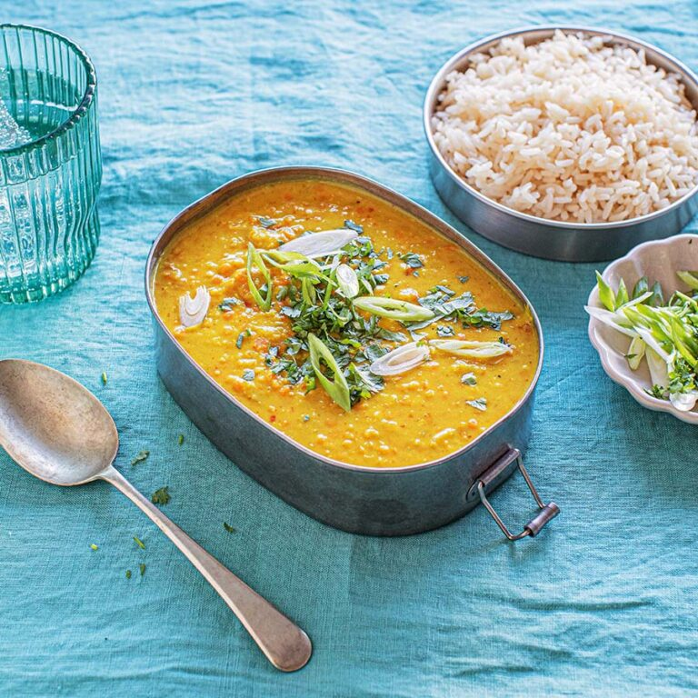

Slow Cook Sundays
Home
Beef Brisket
Curry
Shaksuka
Search for Recipes
Search
Simple Recipes for Lazy Sundays
Explore the world of slow cooking
Contact Us!
Our Favourites
Beef Brisket
Red Thai Curry Soup

Shakshuka